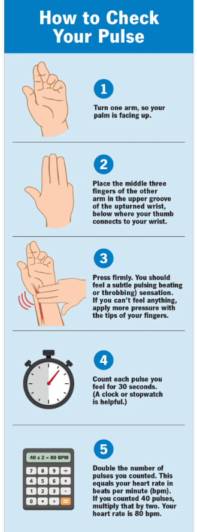

The heart rate is the number of times the heart beats in the space of a minute.
The heart is a muscular organ in the center of the chest. When it beats, the heart pumps blood containing oxygen and nutrients around the body and brings back waste products.
A healthy heart supplies the body with just the right amount of blood at the right rate for whatever the body is doing at that time.
For example, being frightened or surprised automatically releases adrenaline, a hormone, to make the heart rate faster. This prepares the body to use more oxygen and energy to escape or confront potential danger.
The pulse is often confused with the heart rate but refers instead to how many times per minute the arteries expand and contract in response to the pumping action of the heart.
The pulse rate is exactly equal to the heartbeat, as the contractions of the heart cause the increases in blood pressure in the arteries that lead to a noticeable pulse.
Taking the pulse is, therefore, a direct measure of heart rate.
You can find your pulse on your wrist, neck, elbow or even the top of your foot. But the easiest place for taking your pulse is your wrist. Follow these steps:
1.Turn one arm so your palm is facing up.
2.Place the middle three fingers of your other hand in the upper groove of your upturned wrist, below where your thumb connects to your wrist.
3.Press firmly. You should feel a subtle pulsing (beating or throbbing) sensation. If you can’t feel anything, apply more pressure with the tips of your fingers.
4.Count each pulse you feel for 30 seconds. (A clock or stopwatch is helpful.)
5.Double the number of pulses you counted. This equals your heart rate in beats per minute (bpm). If you counted 40 pulses, multiply that by 2. Your heart rate is 80 bpm.
